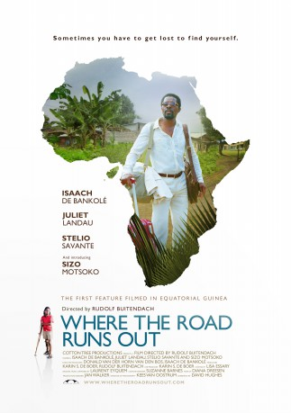

#7918 Am Ende aller Straßen
Alternativ: Where the Road Runs Out
 
 IMDB-Wertung: 6.1 / 10
IMDB-Wertung: 6.1 / 10  Metascore: 0
Metascore: 0 
George, a scientist living in Rotterdam is growing wary of the world of academia. The sudden death of an old friend is the incentive he needs to return to his African roots where he takes over a dilapidated field station in the jungle of Equatorial Guinea. There he meets an orphan boy with a sunny disposition who opens George's wary eyes to this colorful place. The boy plays matchmaker between George and the lady who runs the local orphanage and all seems rosy until an old friend of George's shows up out of nowhere to throw their lives into disarray as George discovers there are many obstacles on the road to redemption and a few more where the road runs out.
Jahr: 2014
Dauer: 92 Minuten
FSK: 6
Land: Süd-Afrika Studio: Lighthouse Home EntertainmentTonspuren:
Untertitel:
Auflösung: 1080p (1920x1080) Größe: 5703 MB
Genre: Drama, Familie, Liebe
Regisseur: Rudolf Buitendach
Drehbuch: David Hughes
Soundtrack: Laurent Eyquem
Darsteller:
 Isaach De Bankolé als George
Isaach De Bankolé als George- Juliet Landau als Corina
 Stelio Savante als Martin
Stelio Savante als Martin- Sizo Motsoko als Jimmy
- Shadé Bankolé als Ms. Jensen
- Recaredo Silebo Boturu als Customs officer
- Jimmy Castro als Taxi driver
- Pocho Guimarães als Father George
- Bongumenzi Gumede als Juan
- Awande Khanyile als Mean Boy #3
- Nhlakanipho Manqele als Young Doctor
- Michael Mbele als Mean Boy #1
- Thabo Nbguni als Priest
- Marcelo Ndong als Man at Fruitstall
- Enhle Ngcobo als Maria
- Naomi Ngwenya als Nanny
- Langa Nkosi als Mean Boy #2
- Khulekani Ntazi als Chad
- Nomakhosazana Phetshula als Nurse
- Kenneth Shange als Delivery Man
- Nomthandazo Sibiya als Beth
Datei: X:\2014(A-F)\Am Ende aller Straßen (2014, FSK6, 1920x1080).mkv seit 06.01.2018
Festplatte: HD 2013(I-Z)-2014(A-Z)
 Es gibt insgesamt 119 Filme in der Gruppe '2014(A-F)'
Es gibt insgesamt 119 Filme in der Gruppe '2014(A-F)'